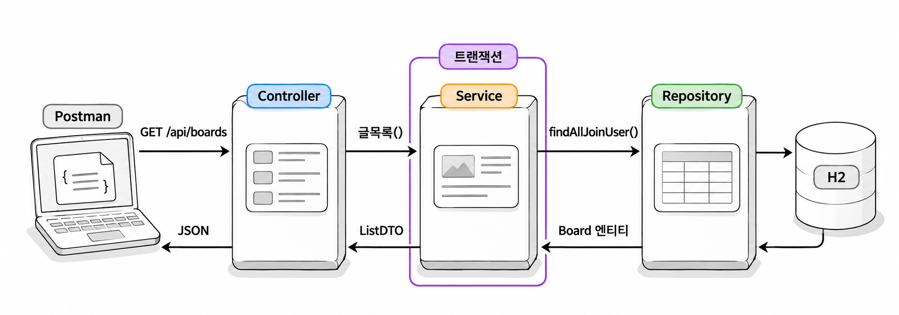
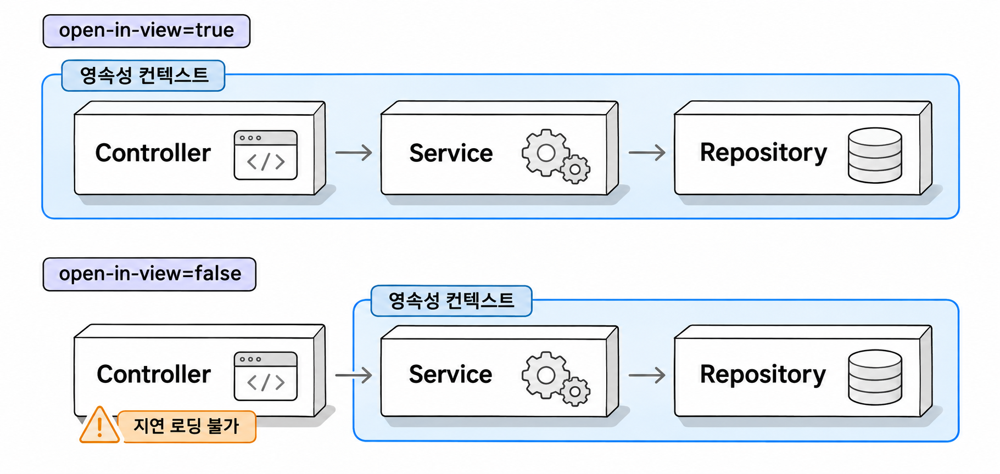
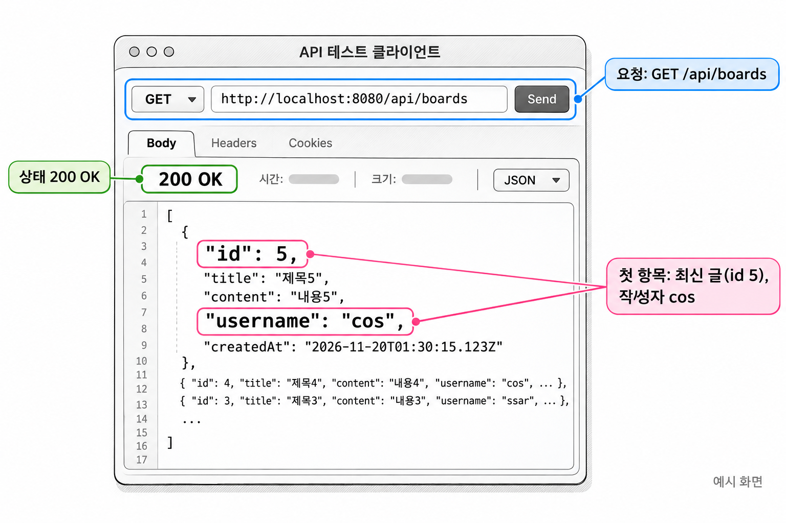
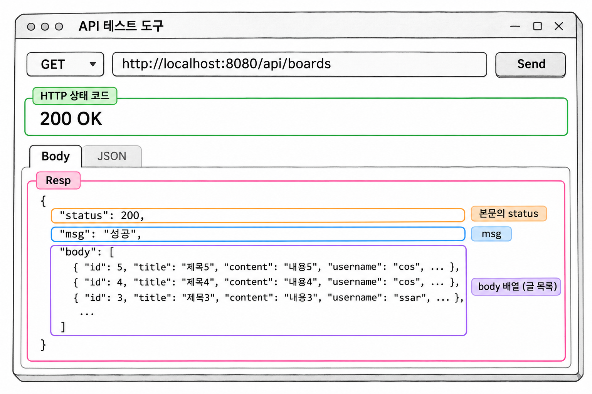

6장. REST API 계층 구조란?
1. 계층 구조의 개념
1.1 Controller · Service · Repository의 역할
요청을 처리하는 코드를 한 클래스에 모두 넣으면 고칠 일이 생길 때마다 그 파일을 열어야 합니다. 주소가 바뀌어도, 업무 규칙이 바뀌어도, 조회 쿼리가 바뀌어도 고칠 곳은 같은 파일입니다. 그래서 하는 일에 따라 클래스를 세 계층으로 나눕니다. 계층(layer)은 같은 종류의 일을 맡는 클래스들의 묶음입니다.
| 계층 | 맡는 일 | 이 장에서 만드는 클래스 |
|---|---|---|
| Controller | HTTP 요청을 받고 응답을 돌려준다 | BoardController |
| Service | 업무 규칙과 트랜잭션을 맡는다 | BoardService |
| Repository | 데이터베이스에 접근한다 | BoardRepository |

그림 6-1처럼 각 계층은 바로 옆 계층만 호출합니다. Controller는 데이터베이스를 모르고, Repository는 HTTP를 모릅니다. 주소 규칙이 바뀌면 Controller만 고치고, 조회 쿼리가 바뀌면 Repository만 고치면 됩니다.
세 계층의 객체는 모두 빈입니다. Service는 Repository를, Controller는 Service를 2장에서 배운 생성자 주입으로 받습니다. 생성자는 Lombok의 @RequiredArgsConstructor로 만듭니다.
1.2 기능별 패키지 구성
클래스를 묶는 방법은 두 가지입니다. 계층별로 controller, service, repository 패키지를 만들 수도 있고, 기능별로 board, user 패키지를 만들 수도 있습니다. 이 책은 기능별 패키지를 씁니다.
| 묶는 방법 | 패키지 예 | 글 기능을 고칠 때 |
|---|---|---|
| 계층별 | controller · service · repository | 폴더 세 개를 오간다 |
| 기능별 | board · user | board 폴더 하나만 연다 |
이 장의 클래스는 5장에서 만든 Board가 있는 com.newtenco.blog.board 패키지에 함께 둡니다. 모든 기능이 함께 쓰는 클래스는 core 아래에 따로 둡니다. 이 장을 마치면 패키지와 클래스가 다음과 같이 놓입니다.
| 패키지 | 클래스 |
|---|---|
com.newtenco.blog | BlogApplication |
com.newtenco.blog.board | Board, BoardController, BoardRepository, BoardResponse, BoardService |
com.newtenco.blog.core.util | Resp |
com.newtenco.blog.user | User |
모든 패키지가 메인 클래스 BlogApplication이 있는 com.newtenco.blog 아래에 있습니다. 그래서 컴포넌트 스캔이 Controller와 Service를 빠짐없이 찾습니다.
2. Repository
2.1 JpaRepository
Spring Data JPA에서는 Repository를 인터페이스로만 선언합니다. JpaRepository를 상속한 인터페이스를 만들어 두면 서버가 뜰 때 Spring Data JPA가 구현 객체를 만들어 빈으로 등록합니다. 구현 클래스는 직접 작성하지 않고, @Repository 애너테이션도 붙이지 않습니다.
기본 문법
public interface 리포지토리명 extends JpaRepository<엔티티타입, ID타입> {
}첫 번째 타입 인자에는 다룰 엔티티를 적습니다. 두 번째에는 그 엔티티의 @Id 필드 타입을 적습니다. Board의 id가 Integer이므로 JpaRepository<Board, Integer>가 됩니다. 상속만 해도 다음 메서드를 쓸 수 있습니다.
| 메서드 | 하는 일 |
|---|---|
save(엔티티) | 저장(새 엔티티면 insert) |
findById(id) | id로 한 건 조회, Optional로 반환 |
findAll() | 전체 조회 |
deleteById(id) | id로 삭제 |
count() | 전체 개수 |
글 목록은 findAll()로도 가져올 수 있습니다. 하지만 최신 글이 앞에 와야 하고, 2.3에서 볼 N+1 문제도 피해야 합니다. 그래서 조회 메서드를 직접 만듭니다.
2.2 @Query와 JPQL
@Query는 Repository 메서드에 실행할 쿼리를 직접 적는 애너테이션입니다. 여기에 쓰는 쿼리 언어가 JPQL(Jakarta Persistence Query Language)입니다. JPQL은 SQL과 문법이 비슷하지만 테이블이 아니라 엔티티를 대상으로 씁니다.
| 구분 | SQL | JPQL |
|---|---|---|
| 대상 | 테이블 board_tb | 엔티티 Board |
| 이름 | 열 이름 user_id | 필드 이름 b.user |
| 연관 데이터 | on 조건으로 외래 키 연결 | 필드로 따라가기(join b.user) |
JPQL에 쓰는 Board는 엔티티 이름이며, 따로 정하지 않으면 클래스 이름과 같습니다. 그래서 대소문자까지 맞춰야 합니다. Hibernate는 5장의 매핑 정보(@Table(name = "board_tb") 등)를 참고해서 JPQL을 H2에 맞는 SQL로 바꿔 실행합니다.
예제 6-1 — 글 목록을 조회하는 Repository 만들기
이어서: 예제 5-5
파일명: src/main/java/com/newtenco/blog/board/BoardRepository.java
package com.newtenco.blog.board;
import org.springframework.data.jpa.repository.JpaRepository;
import org.springframework.data.jpa.repository.Query;
import java.util.List;
public interface BoardRepository extends JpaRepository<Board, Integer> {
@Query("select b from Board b join fetch b.user order by b.id desc")
List<Board> findAllJoinUser();
}select b from Board b는 Board 엔티티를 별칭 b로 모두 가져오라는 뜻입니다. order by b.id desc는 id가 큰 글, 곧 나중에 쓴 글을 앞에 둡니다. 가운데 있는 join fetch b.user가 이 쿼리의 핵심입니다. 다음 항에서 설명합니다.
아직 이 메서드를 호출하는 코드가 없습니다. 그래서 서버를 띄워도 달라지는 것은 없습니다.
2.3 join fetch와 N+1 문제
5장에서 Board의 user 필드는 지연 로딩(LAZY)으로 매핑했습니다. 글을 조회하면 user 필드에는 실제 작성자 대신 프록시가 들어 있습니다. getUser().getUsername()처럼 작성자 값을 처음 꺼낼 때 비로소 user_tb를 조회합니다.
글 목록에는 작성자 이름도 보여 주어야 합니다. join fetch 없이 findAll()로 글을 가져와 작성자 이름을 꺼내면 쿼리가 몇 번 실행되는지 봅시다.
코드 조각
public List<BoardResponse.ListDTO> 글목록() {
return boardRepository.findAll().stream()
.map(BoardResponse.ListDTO::new)
.toList();
}글 목록을 가져오는 select가 먼저 한 번 실행됩니다. 그다음 DTO를 만들면서 작성자 이름을 꺼낼 때마다 user_tb를 조회하는 select가 따로 실행됩니다. 목록 쿼리 1번에 작성자 쿼리 N번이 더 붙는다고 해서 이 현상을 N+1 문제라고 부릅니다.
여기서 N은 글 수가 아니라 서로 다른 작성자 수입니다. 한 번 불러온 작성자는 영속성 컨텍스트에 남아 있어서 다시 조회하지 않기 때문입니다. 샘플 데이터는 작성자가 ssar, cos 둘이라 쿼리가 1 + 2 = 3번 실행됩니다. 글 100개를 작성자 100명이 썼다면 101번이 됩니다.
join fetch는 이 문제를 쿼리 한 번으로 해결합니다. join fetch b.user라고 쓰면 Hibernate가 board_tb와 user_tb를 SQL join으로 함께 조회합니다. 그리고 가져온 작성자를 각 Board의 user에 채워 둡니다. 작성자가 이미 채워져 있으니 이름을 꺼내도 추가 쿼리가 나가지 않습니다.
| 조회 방법 | 실행되는 쿼리 | 샘플 데이터 기준 |
|---|---|---|
findAll() + 지연 로딩 | 글 1번 + 작성자 N번 | 3번 |
join fetch | 글과 작성자를 join으로 1번 | 1번 |
즉시 로딩(EAGER)으로 바꿔도 N+1 문제는 사라지지 않습니다. JPQL로 글을 조회하면 Hibernate는 먼저 쿼리대로 글만 가져옵니다. 그 뒤에 즉시 로딩 설정을 보고 작성자를 따로 조회합니다. 그래서 이 책은 연관 엔티티를 지연 로딩으로 두고, 연관 엔티티가 함께 필요한 조회에서만 join fetch로 가져옵니다.
3. record와 응답 DTO
3.1 엔티티를 그대로 내보내지 않는 이유
Controller가 Board 엔티티를 그대로 반환해도 Jackson은 JSON을 만들려고 합니다. 그래도 이 책은 엔티티를 응답으로 내보내지 않습니다.
첫째, 내보내면 안 되는 값까지 나갑니다. Board의 user 필드에는 User 엔티티가 들어 있고, User에는 password 필드가 있습니다. 엔티티를 그대로 내보내면 비밀번호까지 JSON에 실립니다.
둘째, 지연 로딩 프록시가 문제를 일으킵니다. 작성자가 아직 프록시인 채로 Jackson이 JSON을 만들면 프록시의 내부 필드까지 변환하려다 오류가 납니다. 트랜잭션 밖에서 지연 로딩을 시도하다 실패하기도 합니다.
셋째, 테이블 구조와 API 응답이 묶입니다. 엔티티에 필드 하나를 더하면 API 응답 모양도 함께 바뀝니다. 그러면 이 API를 쓰는 화면 쪽 코드가 예고 없이 깨질 수 있습니다.
그래서 응답에 필요한 값만 담는 객체를 따로 만듭니다. 계층 사이에서 데이터를 옮기려고 만드는 객체를 DTO(Data Transfer Object)라고 합니다.
3.2 record로 응답 DTO 만들기
이 책은 DTO를 record로 만듭니다. record는 Java 16부터 쓸 수 있는 클래스 형태입니다. 구성 요소만 선언하면 필드 · 생성자 · 접근 메서드가 생깁니다. 필드 값을 바꿀 수 없어서 응답 데이터를 담기에 알맞습니다.
기본 문법
public record 레코드명(타입 구성요소명, 타입 구성요소명) {
}record 한 줄을 쓰면 컴파일러가 다음 코드 조각의 주석에 적은 코드를 만들어 넣습니다.
코드 조각
public record SampleDTO(Integer id, String title) {}
// 컴파일러가 만들어 주는 것
// private final Integer id; private final String title; 값을 바꿀 수 없는 필드
// public SampleDTO(Integer id, String title) { ... } 정식 생성자
// public Integer id() { ... } public String title() { ... } 접근 메서드
// equals() · hashCode() · toString() 구성 요소 값으로 비교하고 출력접근 메서드 이름에는 get이 붙지 않습니다. Lombok의 @Getter를 붙인 엔티티는 board.getTitle()로 값을 꺼내고, record는 dto.title()로 꺼냅니다. toString()은 SampleDTO[id=1, title=제목1]처럼 구성 요소를 모두 보여 주므로 로그로 값을 확인하기 편합니다. equals()는 구성 요소 값이 모두 같으면 true를 돌려줍니다.
Jackson은 record의 구성 요소 이름을 그대로 JSON 키로 씁니다. title 구성 요소는 "title" 키가 됩니다. 요청 JSON을 record로 받는 방법은 10장에서 다룹니다.
3.3 엔티티를 받는 보조 생성자
record의 정식 생성자는 모든 구성 요소를 순서대로 받습니다. 엔티티에서 값을 하나씩 꺼내 정식 생성자에 넘기는 코드를 DTO가 필요한 곳마다 쓰면 번거롭습니다. 그래서 엔티티 하나를 받는 보조 생성자를 record 안에 둡니다. record의 보조 생성자는 반드시 this(...)로 정식 생성자를 호출해야 합니다.
예제 6-2 — 글 목록 응답 DTO 만들기
이어서: 예제 6-1
파일명: src/main/java/com/newtenco/blog/board/BoardResponse.java
package com.newtenco.blog.board;
import java.sql.Timestamp;
public class BoardResponse {
public record ListDTO(Integer id, String title, String content, String username, Timestamp createdAt) {
public ListDTO(Board board) {
this(board.getId(), board.getTitle(), board.getContent(), board.getUser().getUsername(), board.getCreatedAt());
}
}
}ListDTO에는 User 객체 대신 작성자 이름 username 하나만 담습니다. 비밀번호와 이메일이 들어갈 자리는 아예 없습니다.
BoardResponse는 글 응답 DTO를 모아 두는 바깥 클래스입니다. 7장에서 상세 응답 DTO가 생기면 이 클래스 안에 record를 하나 더 추가합니다. 쓰는 쪽에서는 BoardResponse.ListDTO처럼 바깥 클래스 이름과 함께 씁니다. 그래서 이름만 보고도 어떤 기능의 어떤 응답인지 알 수 있습니다.
보조 생성자 안의 board.getUser().getUsername()은 작성자 이름을 꺼냅니다. 작성자가 join fetch로 채워져 있으면 추가 쿼리가 나가지 않습니다. 프록시 상태라면 이 줄에서 작성자 조회 쿼리가 실행됩니다.
4. Service와 트랜잭션
4.1 @Service와 @Transactional(readOnly = true)
@Service는 업무 로직을 맡는 클래스라고 표시하는 애너테이션입니다. @Component처럼 컴포넌트 스캔 대상이라서, 붙여 두면 스프링이 빈으로 등록합니다. 그래서 Controller가 생성자로 주입받을 수 있습니다.
트랜잭션(transaction)은 데이터베이스 작업을 하나로 묶는 단위입니다. 묶인 작업은 모두 반영되거나 모두 취소됩니다. @Transactional을 붙인 메서드는 시작할 때 트랜잭션이 열리고 끝날 때 닫힙니다. 클래스에 붙이면 그 클래스의 메서드 전체에 적용됩니다. public 메서드뿐 아니라 protected 메서드와 패키지 전용 메서드에도 적용됩니다. 다만 private 메서드에는 적용되지 않습니다.
5장에서 open-in-view를 껐으므로, 이 책의 설정에서는 영속성 컨텍스트가 트랜잭션이 열려 있는 동안만 살아 있습니다. 지연 로딩도 이 안에서만 할 수 있습니다. 이 설정에 따른 차이는 4.2에서 자세히 봅니다. 그래서 엔티티를 DTO로 바꾸는 일은 트랜잭션이 열린 Service 메서드 안에서 끝냅니다.
readOnly = true는 이 트랜잭션에서 조회만 한다고 알리는 설정입니다. Hibernate는 조회한 엔티티의 처음 모습을 보관해 둡니다. 트랜잭션이 끝날 때 바뀐 곳을 찾아 update를 실행하기 위해서입니다. 읽기 전용이면 처음 모습을 보관하지도, 바뀐 곳을 찾지도 않으므로 메모리와 시간을 아낍니다.
이 장의 Service에는 조회 메서드만 있으므로 클래스 전체를 읽기 전용으로 둡니다. 데이터를 바꾸는 메서드에서 이 설정을 덮어쓰는 방법은 10장에서 다룹니다.
예제 6-3 — 글 목록 Service 만들기
이어서: 예제 6-2
파일명: src/main/java/com/newtenco/blog/board/BoardService.java
package com.newtenco.blog.board;
import lombok.RequiredArgsConstructor;
import org.springframework.stereotype.Service;
import org.springframework.transaction.annotation.Transactional;
import java.util.List;
@RequiredArgsConstructor
@Transactional(readOnly = true)
@Service
public class BoardService {
private final BoardRepository boardRepository;
public List<BoardResponse.ListDTO> 글목록() {
return boardRepository.findAllJoinUser().stream()
.map(BoardResponse.ListDTO::new)
.toList();
}
}BoardResponse.ListDTO::new는 BoardResponse.ListDTO에 만들어 둔 보조 생성자(예제 6-2), 곧 Board 하나를 받는 생성자를 가리키는 메서드 참조입니다. 스트림의 Board가 하나씩 이 생성자에 들어가 ListDTO로 바뀝니다. Service가 DTO 목록을 반환하므로 Controller 쪽으로는 엔티티가 넘어가지 않습니다.
메서드 이름 글목록()은 한글로 썼습니다. 자바는 식별자에 한글을 허용하므로 그대로 컴파일됩니다.
4.2 open-in-view를 끄면 생기는 일
5장의 JPA 설정에서 spring.jpa.open-in-view=false로 두었습니다. open-in-view는 영속성 컨텍스트를 언제까지 열어 둘지 정하는 설정입니다. Spring Boot의 기본값은 true입니다. true이면 요청이 들어올 때 영속성 컨텍스트를 열고 응답을 다 만들 때까지 유지합니다. 그래서 트랜잭션이 끝난 Controller에서도 지연 로딩을 할 수 있습니다.
편리하지만 요청을 처리하는 내내 데이터베이스 연결을 붙잡고 있게 됩니다. 요청이 몰리면 커넥션 풀의 연결이 모자라 다른 요청이 기다립니다. false로 끄면 Service의 트랜잭션이 끝날 때 영속성 컨텍스트도 닫히고 연결이 바로 반납됩니다.

그림 6-2의 아래 줄처럼, open-in-view를 끄면 트랜잭션 밖에 있는 Controller는 지연 로딩을 할 수 없습니다. Service가 findAll()로 가져온 엔티티를 그대로 반환하고 Controller가 DTO로 바꾸게 하면 문제가 드러납니다.
코드 조각
// BoardService
public List<Board> 글목록() {
return boardRepository.findAll();
}
// BoardController
@GetMapping("/api/boards")
public List<BoardResponse.ListDTO> list() {
return boardService.글목록().stream()
.map(BoardResponse.ListDTO::new)
.toList();
}Controller에서 board.getUser().getUsername()이 실행되는 순간 작성자는 아직 프록시입니다. 그런데 영속성 컨텍스트는 이미 닫혀 있습니다. Hibernate는 작성자를 조회하지 못하고 LazyInitializationException을 던집니다. 로그에는 다음과 비슷한 메시지가 남습니다.
org.hibernate.LazyInitializationException: Could not initialize proxy [com.newtenco.blog.user.User#1] - no sessionUser#1은 id가 1인 User 엔티티라는 뜻입니다. 이 예제에서는 findAll()이 1번 글부터 가져오고, 1번 글의 작성자가 1번 회원 ssar입니다. 그래서 첫 번째 DTO를 만들 때 바로 오류가 납니다.
메시지 끝의 no session은 지연 로딩에 쓸 영속성 컨텍스트가 없다는 뜻입니다. Hibernate에서는 영속성 컨텍스트를 가지고 데이터베이스 작업을 하는 객체를 세션(Session)이라고 부릅니다. 세션이 닫히면 영속성 컨텍스트도 함께 닫힙니다.
이 오류를 피하려고 이 책은 두 가지를 지킵니다. 필요한 연관 엔티티는 join fetch로 미리 채워 둡니다. 그리고 엔티티를 DTO로 바꾸는 일은 트랜잭션 안인 Service에서 끝냅니다. open-in-view를 켜 두면 이런 실수가 오류 없이 지나갔다가 나중에 N+1 문제나 연결 부족으로 드러납니다. 꺼 두면 개발 중에 바로 오류가 나므로 그 자리에서 고칠 수 있습니다.
5. Controller
5.1 @RestController와 @GetMapping
@RestController는 HTTP 요청을 받는 클래스라고 표시하는 애너테이션입니다. 이 애너테이션이 붙은 클래스는 빈으로 등록됩니다. 메서드가 반환한 객체는 Jackson이 JSON으로 바꿔 응답 본문에 씁니다. HTML 화면을 찾아 돌려주는 @Controller와 달리 반환값 자체가 응답 데이터가 됩니다.
@GetMapping은 메서드가 처리할 GET 요청의 주소를 정합니다. POST, PUT, DELETE에도 같은 모양의 애너테이션(@PostMapping 등)이 있으며, 뒤 장에서 하나씩 씁니다.
기본 문법
@RestController
public class 컨트롤러명 {
@GetMapping("주소")
public 반환타입 메서드명() {
return 응답데이터;
}
}5.2 글 목록 API 확인
Controller까지 만들면 요청이 세 계층을 모두 거치는 글 목록 API가 완성됩니다.
예제 6-4 — 글 목록 API 만들기
이어서: 예제 6-3
파일명: src/main/java/com/newtenco/blog/board/BoardController.java
package com.newtenco.blog.board;
import lombok.RequiredArgsConstructor;
import org.springframework.web.bind.annotation.GetMapping;
import org.springframework.web.bind.annotation.RestController;
import java.util.List;
@RequiredArgsConstructor
@RestController
public class BoardController {
private final BoardService boardService;
@GetMapping("/api/boards")
public List<BoardResponse.ListDTO> list() {
return boardService.글목록();
}
}실행 결과
PowerShell에서 .\gradlew.bat bootRun으로 서버를 띄웁니다. Postman에서 GET http://localhost:8080/api/boards로 요청을 보내면 응답 본문에 다음 JSON이 표시됩니다.
[
{ "id": 5, "title": "제목5", "content": "내용5", "username": "cos", "createdAt": "2026-11-20T01:30:15.123Z" },
{ "id": 4, "title": "제목4", "content": "내용4", "username": "cos", "createdAt": "2026-11-20T01:30:15.123Z" },
{ "id": 3, "title": "제목3", "content": "내용3", "username": "ssar", "createdAt": "2026-11-20T01:30:15.123Z" },
{ "id": 2, "title": "제목2", "content": "내용2", "username": "ssar", "createdAt": "2026-11-20T01:30:15.123Z" },
{ "id": 1, "title": "제목1", "content": "내용1", "username": "ssar", "createdAt": "2026-11-20T01:30:15.123Z" }
]createdAt은 data.sql의 now()가 실행된 시각이라 실행할 때마다 다릅니다. Jackson 3은 Timestamp를 ISO-8601 형식의 UTC 시각으로 바꾸고, 끝에 UTC를 뜻하는 Z를 붙입니다.

생성형 예시 · 실제 실행 안 함
같은 요청을 보낼 때 IntelliJ 콘솔에 출력되는 SQL도 확인합니다. 5장에서 show-sql과 format_sql을 켜 두었기 때문에 Hibernate가 실행한 쿼리가 줄을 맞춰 출력됩니다.
Hibernate:
select
b1_0.id,
b1_0.content,
b1_0.created_at,
b1_0.title,
u1_0.id,
u1_0.created_at,
u1_0.email,
u1_0.password,
u1_0.username
from
board_tb b1_0
join
user_tb u1_0
on u1_0.id=b1_0.user_id
order by
b1_0.id desc요청 한 번에 select가 한 번만 실행되었고, join으로 user_tb를 함께 읽었습니다. join fetch가 N+1 문제를 막았다는 것을 로그로 확인할 수 있습니다. 쿼리는 password까지 조회했지만 응답 JSON에는 ListDTO에 담은 값만 나갔습니다.
6. 공통 응답 Resp
6.1 응답 모양 통일하기(status · msg · body)
예제 6-4의 응답은 JSON 배열 하나입니다. 7장에서 글 상세 조회를 만들면 응답은 객체 하나가 되고, 실패하면 또 다른 모양의 오류 정보가 나갑니다. API마다 응답 모양이 다르면 화면 쪽 코드도 API마다 처리 방법을 따로 짜야 합니다.
그래서 모든 응답을 같은 바깥 틀로 감쌉니다. 상태 코드 status, 안내 메시지 msg, 실제 데이터 body 세 칸을 늘 두고, API마다 달라지는 데이터는 body에만 담습니다. 이 틀을 record Resp로 만듭니다.
| 칸 | 담는 값 | 글 목록 API의 값 |
|---|---|---|
status | 상태 코드 | 200 |
msg | 안내 메시지 | "성공" |
body | 실제 데이터 | 글 목록 배열 |
예제 6-5 — 공통 응답으로 글 목록 감싸기
이어서: 예제 6-4
파일명: src/main/java/com/newtenco/blog/core/util/Resp.java
package com.newtenco.blog.core.util;
import org.springframework.http.ResponseEntity;
public record Resp<T>(Integer status, String msg, T body) {
public static <B> ResponseEntity<Resp<B>> ok(B body) {
return ResponseEntity.ok(new Resp<>(200, "성공", body));
}
}파일명: src/main/java/com/newtenco/blog/board/BoardController.java
package com.newtenco.blog.board;
import com.newtenco.blog.core.util.Resp;
import lombok.RequiredArgsConstructor;
import org.springframework.http.ResponseEntity;
import org.springframework.web.bind.annotation.GetMapping;
import org.springframework.web.bind.annotation.RestController;
@RequiredArgsConstructor
@RestController
public class BoardController {
private final BoardService boardService;
@GetMapping("/api/boards")
public ResponseEntity<?> list() {
return Resp.ok(boardService.글목록());
}
}실행 결과
Build > Build Project(Ctrl + F9)로 다시 컴파일하면 devtools가 서버를 다시 시작합니다. 그 뒤 Postman에서 같은 요청을 보내면 응답이 다음 모양으로 바뀝니다.
{
"status": 200,
"msg": "성공",
"body": [
{ "id": 5, "title": "제목5", "content": "내용5", "username": "cos", "createdAt": "2026-11-20T01:30:15.123Z" },
{ "id": 4, "title": "제목4", "content": "내용4", "username": "cos", "createdAt": "2026-11-20T01:30:15.123Z" },
{ "id": 3, "title": "제목3", "content": "내용3", "username": "ssar", "createdAt": "2026-11-20T01:30:15.123Z" },
{ "id": 2, "title": "제목2", "content": "내용2", "username": "ssar", "createdAt": "2026-11-20T01:30:15.123Z" },
{ "id": 1, "title": "제목1", "content": "내용1", "username": "ssar", "createdAt": "2026-11-20T01:30:15.123Z" }
]
}예제 6-4의 배열이 그대로 body 안으로 들어갔습니다. Resp는 글 기능과 상관없이 모든 기능이 함께 쓰므로 core.util 패키지에 둡니다.

생성형 예시 · 실제 실행 안 함
6.2 ResponseEntity와 제네릭 정적 메서드
ResponseEntity는 HTTP 응답 전체를 나타내는 스프링 클래스입니다. 응답 본문만 담는 일반 객체와 달리 상태 코드와 헤더까지 함께 담습니다. Controller가 ResponseEntity를 반환하면 스프링은 그 안의 상태 코드로 응답을 보내고, 본문은 Jackson이 JSON으로 바꿉니다.
ResponseEntity.ok(본문)은 상태 코드 200(OK)으로 응답을 만드는 정적 메서드입니다. 지금은 성공 응답만 있지만, 7장에서 404 같은 실패 응답을 보낼 때는 상태 코드를 직접 정해야 합니다. 그래서 처음부터 ResponseEntity로 반환해 둡니다.
JSON 안의 "status": 200과 HTTP 응답의 상태 코드 200은 따로 정해지는 값입니다. Resp.ok()가 두 값을 같게 맞춰 줍니다. 두 값이 어긋나면 기준은 HTTP 상태 코드입니다. 브라우저, Postman, 테스트 도구는 모두 HTTP 상태 코드로 성공과 실패를 판단하기 때문입니다. 본문의 status는 화면 코드가 본문만 보고도 결과를 알 수 있게 넣어 둔 복사본입니다. Resp의 정적 메서드를 거치지 않고 상태 코드를 직접 적는 곳(12장의 로그인 응답, 14장의 RespFilter)에서는 두 값을 같은 수로 맞춰야 합니다.
Resp의 body에는 글 목록도, 글 하나도, 회원 정보도 담겨야 합니다. 그래서 body의 타입을 타입 매개변수 T로 두었습니다. Resp<List<BoardResponse.ListDTO>>처럼 쓰면 T가 글 목록 타입으로 정해집니다.
정적 메서드 ok()는 record의 T를 쓸 수 없습니다. T는 Resp 객체를 만들 때 정해지는데, 정적 메서드는 객체 없이 호출되기 때문입니다. 그래서 ok()는 자기만의 타입 매개변수를 따로 선언합니다.
기본 문법
public static <타입매개변수> 반환타입 메서드명(타입매개변수 매개변수명) {
return 값;
}static 뒤의 <B>가 ok()만의 타입 매개변수입니다. Resp.ok(boardService.글목록())처럼 호출하면 컴파일러가 넘긴 값을 보고 B를 List<BoardResponse.ListDTO>로 정합니다. 반환 타입도 ResponseEntity<Resp<List<BoardResponse.ListDTO>>>가 됩니다. 이름을 T가 아닌 B로 지은 것은 record의 T와 다른 타입 매개변수임을 드러내기 위해서입니다.
Controller의 반환 타입은 ResponseEntity<?>로 썼습니다. ?는 어떤 타입이든 받는다는 와일드카드입니다. 그래서 긴 제네릭 타입을 메서드마다 적지 않아도 됩니다. 7장부터는 성공과 실패처럼 본문 타입이 다른 응답을 한 메서드에서 돌려줄 때도 이 반환 타입을 그대로 씁니다.